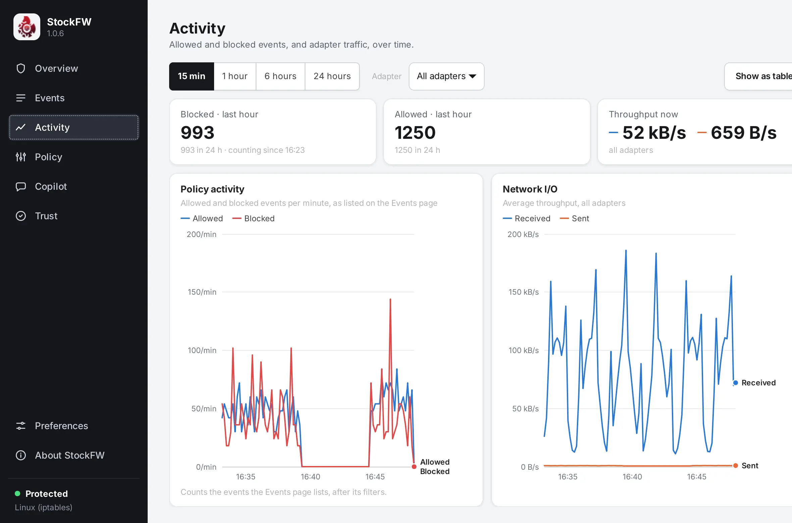

Activity
Two graphs over the last 15 minutes to 24 hours: how many connections your policy allowed and blocked per minute, and how many bytes per second crossed your adapters. The page is new in 1.0.6.

The controls#
- Range: 15 min, 1 hour, 6 hours, 24 hours. Both graphs follow it.
- Adapter: all adapters together, or one. It affects the Network I/O graph and the throughput tile.
- Show as table: every interval as a row, for reading exact numbers or copying them.
The three tiles summarise the range: blocked and allowed counts for the last hour and the last 24 hours, with “counting since 16:23” when the app has been open for less than that, and the current throughput in and out.
Policy activity#
Events per minute, allowed in blue and blocked in red. It counts exactly what the Events page lists, after that page’s filters and its duplicate check, and it counts each event at the event’s own time, not when the app happened to read it. That matters on Windows, where the first poll delivers a batch of recent history: those events land in their own minutes, and anything older than the app is dropped into the no-data band rather than piled into the current minute as a false spike. Verified fs-activity-smoke
On Linux in 1.0.5 and 1.0.6 the allowed line is not drawn and the card says so, because the kernel log carried only drops and rejects, and a flat allowed line would have claimed that nothing was allowed. Since 1.0.7 the policy logs the first packet of each new allowed connection, so the line is real. Built for 1.0.7
Network I/O#
Bytes per second received and sent, from the adapters’ own cumulative counters: GetIfTable2 on Windows, /proc/net/dev on Linux. No packet capture, no trace session, no elevation. A counter that goes backwards (a driver reload) starts a new baseline rather than drawing negative traffic. Verified test-core.sh
Why the grey band#
A graph that starts at zero looks like a quiet night. StockFW did not observe anything before it was opened, so that stretch is shaded “no data” and never drawn as a line. The newest point is partial, and its rate divides by the seconds that have actually elapsed, so the last sample is not drawn artificially low. Verified fs-activity-smoke
Reading a point#
Move the mouse over a graph for a crosshair and a tooltip with the values at that interval; or focus the graph and use the arrow keys. Each graph has one y axis with round gridlines, time ticks spaced for their labels, a legend and a label at the end of each line, and the colours were checked for contrast in light mode: allowed and received #2a78d6, blocked #e34948, sent #eb6834.
How the data is kept#
Counters are kept in 10-second slots, 8,640 per series (24 hours), at most 24 series, about 1.6 MB when full, so a week in the tray costs the same memory as an hour. Nothing is written to disk; the graphs are about this session. Verified test-core.sh The dashboard draws the same two graphs from the same code, and can backfill from the kernel log so its history starts before it was opened.